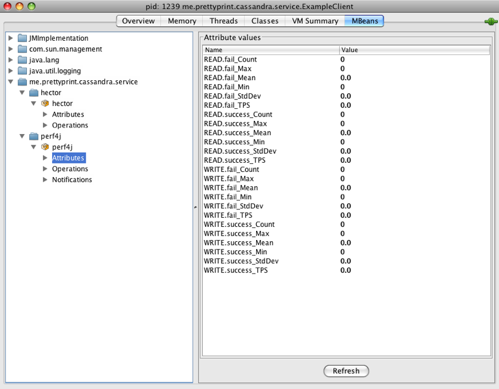
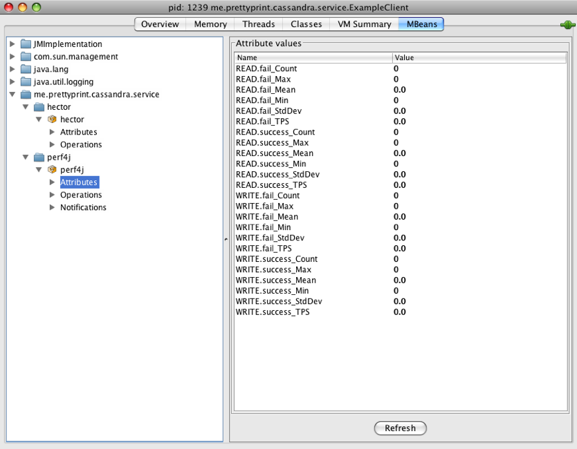

JMX in Hector
Hector is a Java client for Cassandra I’ve implemented and have written about before (here and here).

What I haven’t written about is its extensive JMX support, which makes it really unique, among other properties such as failover and really simple load balancing. JMX support in hector isn’t really new, but it’s the first time I have the chance to write writing about it.
JMX is Java’s standard way for monitoring applications. The default thrift cassandra client provides no JMX support at all so I figured you have to be crazy to run a cassandra client at such a high scale without being able to monitor it.
Here’s the list of JMX attributes provided by hector
WriteFail - Number of failed write operations. ReadFail - Number of failed read operations RecoverableTimedOutCount - Number of recoverable TimedOut exceptions. Those exceptions may happen when certain nodes are under heavy load that they can't provide the service RecoverableUnavailableCount - Number of recoverable Unavailable exceptions RecoverableTransportExceptionCount - Number of recoverable Transport exceptions RecoverableErrorCount - Total number of recoverable errors. SkipHostSuccess - Number of times that a successful skip-host (failover) has occurred. NumPoolExhaustedEventCount - Number of times threads have encountered the pool-exhausted state (and were blocked) NumPools - Number of connections pools. This is also the number of unique hosts in the ring that this client has communicated with. The number may be one or more, depending on the load balance policy and failover attempts. PoolNames - The list of known pools NumIdleConnections - Number of currently idle connections (in all pools) NumActive - number of currently active connections (all pools) NumExhaustedPools - Number of currently exhausted connection pools. RecoverableLoadBalancedConnectErrors - Number of recoverable load-balance connection errors. ExhaustedPoolNames - The list of exhausted connection pools. NumBlockedThreads - Number of currently blocked threads. NumConnectionErrors - Number of connection errors (initial connection to the ring for retrieving metadata) KnownHosts - the list of known hosts in the ring. This list will be used by the client in case failover is required. updateKnownHosts - This is an operation that may be invoked by an admin to tell the client to update its list of known hosts. Usually this is done after the ring configuration has changed.
Performance Counters: (I used the mechanics of perf4j to implement those)
READ.success_TPS - Total Read Transactions Per Second (measured as the average over the last 10 seconds). READ.success_Mean - The Mean time of successful read requests over the last 10 seconds. READ.success_Min - Time in millisec of the fastest successful read operation (over the last 10 seconds) READ.success_Max - Time in millisec of the slowest read (over the last 10 seconds) READ.success_StdDev - Standard deviation of time of successful read operations (over the last 10 seconds) WRITE.success_TPS - Total write transactions per second over (over the last 10 seconds). WRITE.success_Mean - ... WRITE.success_Min WRITE.success_Max WRITE.success_StdDev READ.fail_TPS READ.fail_Mean READ.fail_Min READ.fail_Max READ.fail_StdDev WRITE.fail_TPS WRITE.fail_Mean WRITE.fail_Min WRITE.fail_Max WRITE.fail_StdDev
This looks like this in jconsole (ignore the zeros, it’s not real data…)
 

{kind=link}
Could you please write a post on how to get these stuffs in java?
By ibillguo on Apr 4, 2010
Java’s JMX coverage is pretty extensive and way out of scope here….
See for example http://java.sun.com/developer/technicalArticles/J2SE/jmx.html
A simple start would be to using the jconsole UI tool http://java.sun.com/developer/technicalArticles/J2SE/jconsole.html
By Ran Tavory on Apr 4, 2010
Thanks, it’s working
By ibillguo on Apr 6, 2010
Does Hector have Cassandra 0.6 support (released in the last couple days)? Any plans?
By Dan on Apr 14, 2010
Yes, it’s in the 0.6.0 branch and in the downloads page http://github.com/rantav/hector/tree/0.6.0
http://github.com/rantav/hector/downloads
By Ran Tavory on Apr 14, 2010
Hi Ran Tavory,
Cassandra 0.6.0 release version is available now
Any timeline for hector on supporting official release?
By ibillguo on Apr 16, 2010
Instead of using unmaintainable bash trickery to kind SLOC, use CLOC.
http://cloc.sourceforge.net/
It has support for many programming languages.
By Elazar Leibovich on May 16, 2010
Oops, wrong post, I meant to mention that on the post where you mentioned how you counted Cassandra’s SLOC.
By Elazar Leibovich on May 16, 2010
that’s cool, didn’t know about cloc
By Ran Tavory on May 16, 2010
Here are steps for newbe like me –
Non production test environment –
Disabling Security
To disable both password authentication and SSL (no security), set these system properties when you start the JVM:
com.sun.management.jmxremote.authenticate=false
com.sun.management.jmxremote.ssl=false
Warning: This configuration is insecure: any remote user who knows (or guesses) your JMX port number and host name will be able to monitor and control your Java application and platform. While it may be acceptable for development, it is not recommended for production systems.
To enable monitoring and management from remote systems, set this system property when you start the JVM:
com.sun.management.jmxremote.port=portNum
where portNum is the port number through which you want to enable JMX/RMI connections. Be sure to specify an unused port number.
Ref – http://download.oracle.com/javase/1.5.0/docs/guide/management/agent.html#auth
By Gagan on Jan 10, 2011